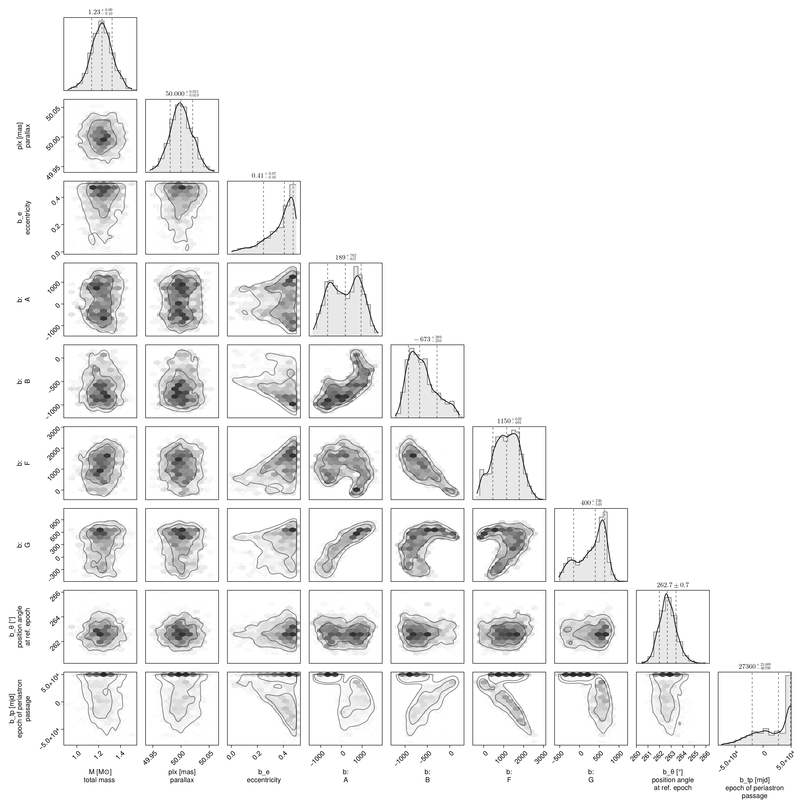
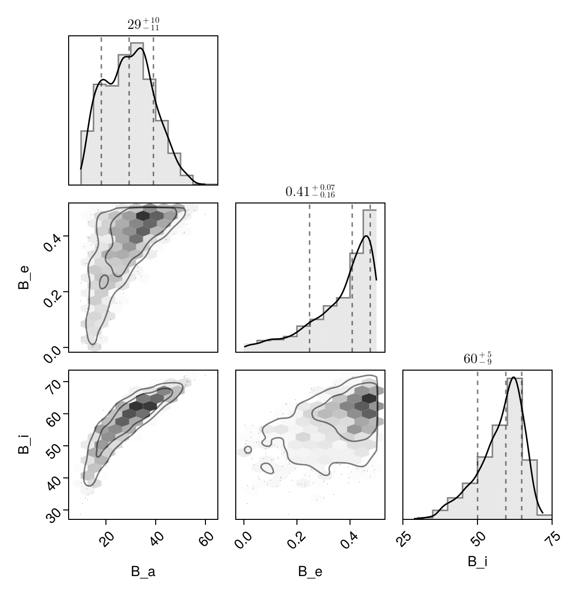

Fit with a Thiele-Innes Basis
This example shows how to fit relative astrometry using a Thiele-Innes orbital basis instead of the traditional Campbell basis used in other tutorials. The Thiele-Innes basis is more suitable then Campbell for fitting low-eccentricity orbits, because it does not have the issues where ω, Ω, and tp become degenerate as eccentricity and/or inclination fall to zero.
At the end, we will convert our results back into the Campbell basis to compare.
using Octofitter
using CairoMakie
using PairPlots
using Plots:Plots
using Distributions
astrom_like = PlanetRelAstromLikelihood(
(epoch = 50000, ra = -505.7637580573554, dec = -66.92982418533026, σ_ra = 10, σ_dec = 10, cor=0),
(epoch = 50120, ra = -502.570356287689, dec = -37.47217527025044, σ_ra = 10, σ_dec = 10, cor=0),
(epoch = 50240, ra = -498.2089148883798, dec = -7.927548139010479, σ_ra = 10, σ_dec = 10, cor=0),
(epoch = 50360, ra = -492.67768482682357, dec = 21.63557115669823, σ_ra = 10, σ_dec = 10, cor=0),
(epoch = 50480, ra = -485.9770335870402, dec = 51.147204404903704, σ_ra = 10, σ_dec = 10, cor=0),
(epoch = 50600, ra = -478.1095526888573, dec = 80.53589069730698, σ_ra = 10, σ_dec = 10, cor=0),
(epoch = 50720, ra = -469.0801731788123, dec = 109.72870493064629, σ_ra = 10, σ_dec = 10, cor=0),
(epoch = 50840, ra = -458.89628893460525, dec = 138.65128697876773, σ_ra = 10, σ_dec = 10, cor=0),
)
@planet b ThieleInnesOrbit begin
e ~ Uniform(0.0, 0.5)
A ~ Normal(0, 10000) # milliarcseconds
B ~ Normal(0, 10000) # milliarcseconds
F ~ Normal(0, 10000) # milliarcseconds
G ~ Normal(0, 10000) # milliarcseconds
θ ~ UniformCircular()
tp = θ_at_epoch_to_tperi(system,b,50000.0) # reference epoch for θ. Choose an MJD date near your data.
end astrom_like
@system TutoriaPrime begin
M ~ truncated(Normal(1.2, 0.1), lower=0)
plx ~ truncated(Normal(50.0, 0.02), lower=0)
end b
model = Octofitter.LogDensityModel(TutoriaPrime)LogDensityModel for System TutoriaPrime of dimension 9 with fields .ℓπcallback and .∇ℓπcallback
We now sample from the model as usual:
using Random
Random.seed!(0)
results = octofit(model)Chains MCMC chain (1000×24×1 Array{Float64, 3}):
Iterations = 1:1:1000
Number of chains = 1
Samples per chain = 1000
Wall duration = 6.44 seconds
Compute duration = 6.44 seconds
parameters = M, plx, b_e, b_A, b_B, b_F, b_G, b_θy, b_θx, b_θ, b_tp
internals = n_steps, is_accept, acceptance_rate, hamiltonian_energy, hamiltonian_energy_error, max_hamiltonian_energy_error, tree_depth, numerical_error, step_size, nom_step_size, is_adapt, loglike, logpost, tree_depth, numerical_error
Summary Statistics
parameters mean std mcse ess_bulk ess_tail ⋯
Symbol Float64 Float64 Float64 Float64 Float64 Flo ⋯
M 1.2289 0.0983 0.0039 632.3732 517.4162 1. ⋯
plx 50.0001 0.0197 0.0007 911.9668 672.2437 1. ⋯
b_e 0.3688 0.1185 0.0061 383.9325 424.3015 1. ⋯
b_A 165.2163 734.6761 66.1597 133.3622 333.5971 1. ⋯
b_B -620.7069 304.3018 30.7505 112.0727 171.6604 1. ⋯
b_F 1121.7603 634.8436 54.6794 137.0140 184.6835 1. ⋯
b_G 305.0348 346.5800 30.6350 147.6454 219.6509 0. ⋯
b_θy -0.1269 0.0129 0.0005 720.7355 524.8132 1. ⋯
b_θx -0.9922 0.0201 0.0007 778.3304 574.1878 0. ⋯
b_θ -1.6980 0.0128 0.0005 662.1404 563.8438 1. ⋯
b_tp 17801.6328 32258.0623 1934.1333 352.1434 484.7307 0. ⋯
2 columns omitted
Quantiles
parameters 2.5% 25.0% 50.0% 75.0% 97.5% ⋯
Symbol Float64 Float64 Float64 Float64 Float64 ⋯
M 1.0256 1.1644 1.2312 1.2914 1.4187 ⋯
plx 49.9615 49.9875 49.9997 50.0127 50.0388 ⋯
b_e 0.0647 0.3069 0.4083 0.4624 0.4960 ⋯
b_A -1121.1126 -481.0020 189.1854 791.5476 1393.3443 ⋯
b_B -1060.4475 -855.5634 -673.3505 -449.3569 72.1179 ⋯
b_F -107.2960 655.0560 1149.9320 1616.4944 2252.8031 ⋯
b_G -399.3975 49.6503 400.3787 596.9781 764.0749 ⋯
b_θy -0.1506 -0.1355 -0.1276 -0.1189 -0.0996 ⋯
b_θx -1.0306 -1.0063 -0.9923 -0.9782 -0.9521 ⋯
b_θ -1.7210 -1.7066 -1.6987 -1.6903 -1.6709 ⋯
b_tp -51494.5360 -7216.6813 27360.3435 48409.5971 49795.6706 ⋯
Notice that the fit was very very fast! The Thiele-Innes orbital paramterization is easier to explore than the default Campbell in many cases.
We now display the results:
octoplot(model,results)
octocorner(model, results, small=false)
Conversion back to Campbell Elements
To convert our chain into the more familiar Campbell parameterization, we have to do a few steps. We start by turning the chain table into a an array of orbit objects, and then convert their type:
orbits_ti = Octofitter.construct_elements(results, :b, :) # colon means all rows1000-element Vector{ThieleInnesOrbit{Float64}}:
ThieleInnesOrbit{Float64}(0.008530051576999554, 33266.293946327016, 1.186958683348988, 50.01223194498261, 369.7310986135358, -365.61013301355183, 601.4032695767349, 372.90193164423044, -10.174851571983494, 3.380047110102091, 18600.987173428482, 0.12337433509336491, 1.0085667448002307)
ThieleInnesOrbit{Float64}(0.01001500316278062, 32021.860751150012, 1.2411186736270625, 50.059420986207556, 83.07067593578881, -484.74204083460404, 707.050210843254, 203.59828580666877, -11.027474014634446, -1.4459415105242948, 18608.21312288936, 0.12332642631758581, 1.0100656593714645)
ThieleInnesOrbit{Float64}(0.010337662097194477, 31231.475875141135, 1.398081129519081, 50.01418111147845, 67.98141496287246, -484.7802629895585, 769.8212371538868, 159.87460128879758, -12.32885980270472, -0.8161741775871919, 19292.58655975075, 0.11895161996523894, 1.0103916524321994)
ThieleInnesOrbit{Float64}(0.005981266213265523, 33804.94321187694, 1.4052889555929264, 50.01084642569338, 420.1264347365527, -319.8545141614022, 596.5303765051552, 416.16711353776435, -10.892739746618178, 4.31312192230658, 18204.391512181865, 0.1260621330334648, 1.0059992614603972)
ThieleInnesOrbit{Float64}(0.009071803606726407, 31567.14824129546, 1.0828847745843695, 50.0019201912381, 52.402880381457564, -489.80453923884767, 685.1079157179828, 177.41830165324603, -10.351486581538186, -1.9705283516408365, 18960.239315873365, 0.12103668030607022, 1.0091133282740454)
ThieleInnesOrbit{Float64}(0.4974243702953429, -49452.45926796793, 1.2006851259582338, 49.99377721851332, 465.8019322554291, -878.5160314045504, 2169.876984692919, 535.2742252912191, -40.391962234327536, 5.353742995902102, 100698.96008011747, 0.02278955435861608, 1.7261229852749231)
ThieleInnesOrbit{Float64}(0.49045866597749976, -33327.50004303908, 1.2369575516398066, 49.97414042783052, 651.6993466487714, -754.9070643102693, 1855.8088140846091, 732.4235710594621, -35.3671227252244, 7.432861154347987, 84983.69585315941, 0.02700381998645016, 1.7102919766823343)
ThieleInnesOrbit{Float64}(0.19443403082790164, 20586.440897971497, 1.1975736764899163, 50.01684474125753, 284.7384702078887, -556.8368329908967, 964.1293727543424, 292.8313582682024, -16.037805073103687, 2.7781948892167643, 30608.08703266125, 0.07497640810264049, 1.2176725856599695)
ThieleInnesOrbit{Float64}(0.42176236574529546, -42716.757329450396, 1.283127867531562, 49.987388029093815, 43.81195194296126, -842.9781963115432, 2128.0852919053787, 464.22907512891936, -40.277494870110445, -2.961950445189631, 93064.26913699509, 0.024659135518743155, 1.568051528255532)
ThieleInnesOrbit{Float64}(0.4597403975710205, -24540.652171296882, 1.215115784623788, 49.96867985874788, 123.97681062313627, -892.3649921589007, 1815.652145306266, 385.51501824126467, -32.50967437377242, -1.4650465965410622, 75100.66599941059, 0.03055744438564578, 1.6437530293069726)
⋮
ThieleInnesOrbit{Float64}(0.44153761090238947, -10272.200451728866, 1.2334764351641052, 49.97110298229097, 1141.144831485449, -459.1081237264584, 1197.2170530989154, 692.9673016875988, -22.527766055946085, 18.63058423307534, 63387.4216923044, 0.03620409796350117, 1.6066305619940675)
ThieleInnesOrbit{Float64}(0.4920095419974536, -27773.50594296983, 1.2252744378740674, 49.959299293199294, 1087.4252896656365, -549.3888564952192, 1565.546086115707, 822.3456031765722, -30.47279914088779, 16.44306365853631, 80454.58236854267, 0.028523974111128267, 1.7137916518739928)
ThieleInnesOrbit{Float64}(0.43923454773071874, -29448.520003373473, 1.3661229353907867, 49.989062964255986, 836.5172683612866, -660.5709820556689, 1836.777565546815, 622.5985651093373, -34.8876833709342, 12.906767365900219, 81700.25307563071, 0.028089073634540045, 1.6020466672752005)
ThieleInnesOrbit{Float64}(0.4360714054136818, -42388.281651610494, 1.3404880108703812, 49.99611140593922, 1072.1768631387201, -577.8263933891737, 1942.2318549163333, 728.9734772388415, -37.89277033623503, 17.53848395388973, 95381.57021050317, 0.024060040315306546, 1.5957908079525718)
ThieleInnesOrbit{Float64}(0.47014452493598713, -32398.238622049656, 1.1552960785785356, 50.00865906610896, 690.6800711105261, -840.8967791057555, 1847.8739069472592, 340.76642509350216, -32.90818711721475, 12.026157121421653, 84204.30194143055, 0.02725376698922326, 1.665717322886833)
ThieleInnesOrbit{Float64}(0.4607972675826614, -4503.137439001832, 1.276112148148098, 49.98741499531368, 1216.875096916888, -431.7790365922755, 1003.4226326465483, 705.7580262981267, -18.32138002256022, 20.015303118808166, 57620.6923205303, 0.03982743580788735, 1.6459586922641334)
ThieleInnesOrbit{Float64}(0.45173044277968943, -42492.374155480065, 1.2924193719176107, 50.030249712549804, 214.60830883434963, -834.6044348740047, 2105.288032999341, 616.8658130950649, -40.32961219585564, -0.6243595529441056, 93302.21957602176, 0.024596246852756787, 1.6272186977023828)
ThieleInnesOrbit{Float64}(0.4208622786824252, -35488.914941765426, 1.2886464237885482, 49.970863905255904, 11.044654062915239, -844.2078834190247, 1992.9188808277759, 516.5600281307898, -37.83065699410918, -4.3832804632022455, 85806.20548822386, 0.02674497038465243, 1.5663364910359057)
ThieleInnesOrbit{Float64}(0.35064020695222736, 3781.7251055320376, 1.2153231447743589, 50.02763735242188, 12.273451126888936, -765.4601011019125, 1316.2514183739643, 258.8526799116971, -22.260086170015565, -3.2665719517799388, 46514.28676995777, 0.049337194740867174, 1.4422054743435513)Here is one of those entries:
display(orbits_ti[1])We can now make a table of results (and visualize them in a corner plot) by querying properties of these objects:
table = (;
B_a = semimajoraxis.(orbits_ti),
B_e = eccentricity.(orbits_ti),
B_i = rad2deg.(inclination.(orbits_ti)),
)
pairplot(table)
We can also convert the orbit objects into Campbell parameters:
orbits_campbell = Visual{KepOrbit}.(orbits_ti)
orbits_campbell[1]KepOrbit{Float64}
─────────────────────────
a [au ] = 14.5
e = 0.0085300516
i [° ] = 47.5
ω [° ] = 288.0
Ω [° ] = 19.1
tp [day] = 33300.0
M [M⊙ ] = 1.19
period [yrs ] : 50.9
mean motion [°/yr] : 7.07
──────────────────────────
plx [mas] = 50.0
distance [pc ] : 20.0
──────────────────────────